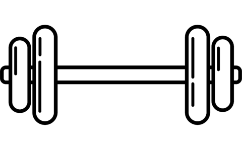
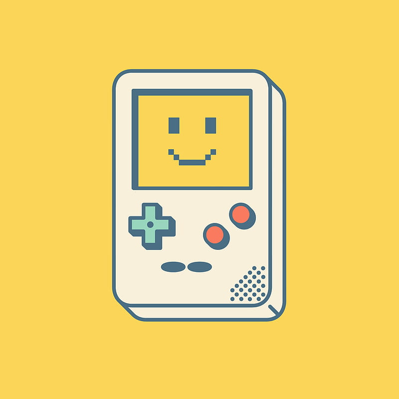
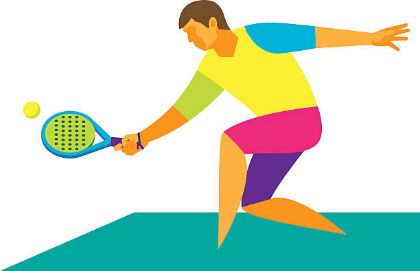
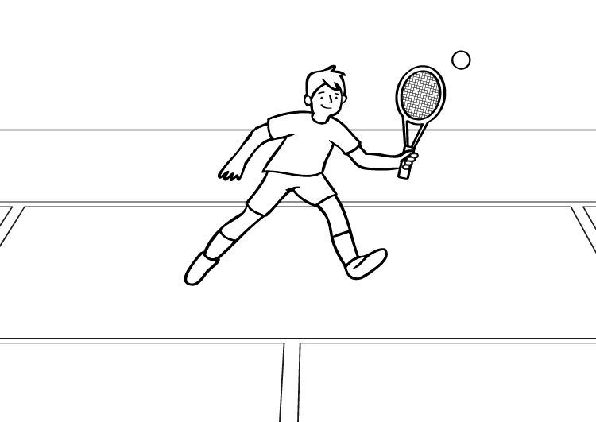
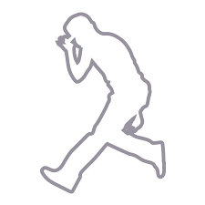

- Gimnasio
- Videojuegos
- Futbol
- Padel
- Tenis
- Peliculas y Series
- Shuffle
Empecé con el gimnasio a los 18 años y no hay dia que intente ir para poder despejarme. Es un hobby que para mí ha sido vital en mi vida para estar fisicamente y saludablemente bien. El deporte siempre es importante

Los videojuegos también han formado gran parte de mi vida. Siempre hay epocas en las que se juega más o menos, pero siempre será un gran pasatiempo para mi.

LLevo más de 3 años jugando en una liguilla de futbol los viernes por las noches y como tiene que ser soy fanatico del mejor equipo del mundo, el Real Madrid.

Un pasatiempo super divertido que cuanto más lo juego más ganas tengo de volver a quedar con mis amigos para volver a echar un partidito. Gracias al tenis he tenido bastante destreza con el padel.

Tristemente, es el deporte que ahora mismo invierto menos tiempo, pero eso no quita que para mi sea de los mejores deportes que he practicado. Después de empezar con 7 años jugando y acabar dejandolo con 18, hoy en dia sigo teniendole mucho cariño ya que las horas que he invertido no me las quita nadie. Rafa Nadal, por supuesto, el mejor deportista que he visto en mi vida y un gran ejemplo a seguir.

Soy muy aficionado a ver series de todo tipo, me gustan muchisimas categorias y puedo llegar a pasarme horas y horas delante del televisor viendolas. Peliculas favoritas: Seven, Whiplash, Avatar, y podría estar así todo el dia porque no pararía.

En bachillerato estaba todo el dia escuchando musica electrónica y conocí el shuffle de un dia para otro. Me fascinó y por mi cuenta estuve entrenando un par de años hasta cogerle el truquillo y subir un par de videos en las redes sociales. Don Diablo mejor artista sin ninguna duda.
